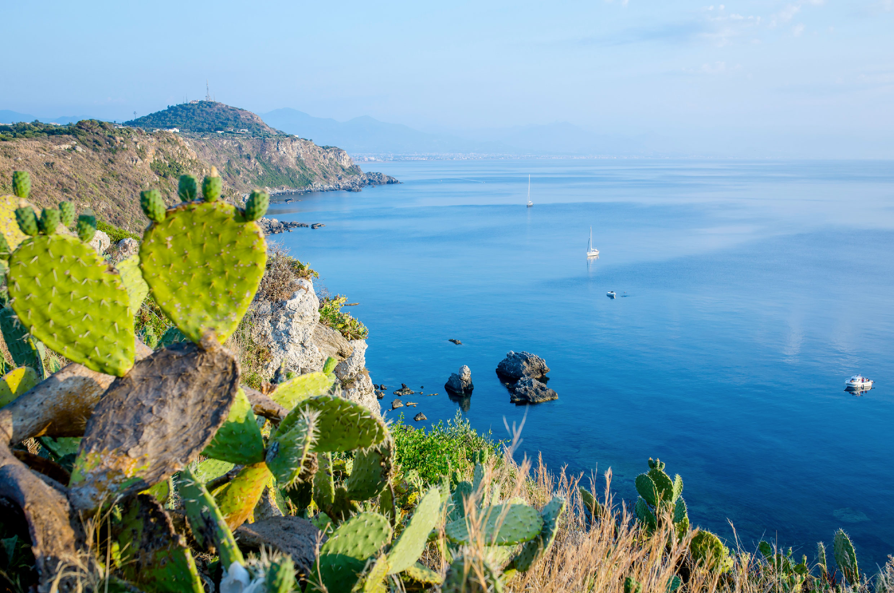

Esploriamo insieme Milazzo!
Hai fatto una scelta straordinaria nel decidere di visitare Milazzo, una città che ti affascinerà con la sua storia millenaria e la sua natura mozzafiato. Milazzo è un vero e proprio scrigno di cultura, dove il mito e la realtà si intrecciano fin dai tempi dell'antica Grecia, lasciando tracce che ancora oggi arricchiscono ogni angolo del suo territorio.
Questa è una delle poche città in Sicilia in grado di offrire un mix così straordinario: un patrimonio storico unico e panorami naturali che lasciano senza fiato. Da Milazzo, infatti, puoi ammirare un paesaggio che si estende fino alle celebri Isole Eolie, le "sette pepite" del Mediterraneo, che sembrano emergere dall'orizzonte, a testimonianza di una bellezza che non ha eguali. Milazzo è un luogo che stimola la mente e incanta il cuore, dove ogni passo ti avvicina a una nuova scoperta, tra la magia del passato e la bellezza di un paesaggio naturale senza pari.
Sei già a Milazzo?

Come arrivare a Milazzo
Milazzo è facilmente raggiungibile con treno, bus o auto. Ecco le indicazioni aggiornate:
In treno
Puoi prendere un treno per Milazzo dalla stazione di Messina. Puoi consultare gli orari e acquistare i biglietti sul sito ufficiale di Trenitalia: Trenitalia.
Una volta arrivato alla stazione ferroviaria di Milazzo, è disponibile un collegamento diretto tra la stazione FS e il porto di Milazzo, che è anche il centro della città. Il trasporto è gestito dalla compagnia SAIS, che opera con la linea 5. Puoi trovare gli orari e i dettagli dei collegamenti qui: Orario SAIS - Linee Urbane Milazzo.
In bus
Da Messina a Milazzo: Ci sono autobus diretti che collegano Messina a Milazzo, gestiti dalla compagnia Giuntabus. Puoi consultare gli orari qui: Giuntabus - Messina-Milazzo.
Dall'aeroporto di Catania a Milazzo: Se arrivi in aereo, puoi prendere un autobus che collega l'aeroporto di Catania a Milazzo. Per il collegamento ti consiglio di controllare gli orari specifici sul sito per maggiori dettagli: Aereoporto-Milazzo .
In auto
Se preferisci arrivare in auto, segui l’autostrada A20 e prendi l'uscita per Milazzo. Da lì, continua sulla tangenziale verso il centro città (Viale Sicilia). Per parcheggiare in centro, puoi utilizzare i parcheggi con strisce blu e gestire il pagamento tramite l'applicazione EasyPark. Scarica l'app o accedi al sito per ulteriori informazioni: EasyPark.
Immagine
Di seguito, un'immagine che mostra il treno diretto a Milazzo:

Raccogliamo pò di energie
Prima di iniziare a scoprire le meraviglie di Milazzo, prenditi un attimo per ricaricare le energie con una colazione tipica siciliana. Sebbene la tradizione sia decisamente dolce e calorica, i piatti sono sempre a base vegetale, per un risveglio ricco di sapori locali. In estate, un siciliano doc non rinuncerebbe mai alla granita con la briosche da inzuppare, ma le delizie non finiscono qui: cannoli, cassate e cornetti sono solo alcune delle prelibatezze che puoi gustare, magari accompagnati da un buon espresso o una fresca spremuta di arance siciliane. Siediti in un bar del centro e lasciati conquistare da questo dolce inizio di giornata.
Iniziamo
Siamo pronti! Questo itinerario è pensato per offrirti un'esperienza completa della nostra splendida città, facendoti scoprire quanto più possibile delle sue bellezze naturali, storiche e culturali. Ma c'è un'ulteriore opportunità: l'itinerario è completamente personalizzabile, così potrai adattarlo ai tuoi gusti e alle tue preferenze.
Puoi scegliere tra due opzioni, entrambe ti porteranno a visitare le stesse meraviglie, ma in un ordine differente:
Itinerario A:
Se decidi di iniziare la giornata a Capo Milazzo, il percorso ti guiderà alla scoperta di luoghi panoramici e naturali, per poi proseguire con altre tappe della città. Alla fine della giornata, ti ritroverai a godere del tramonto alla Baia del Tono.
Itinerario B:
Se preferisci cominciare la giornata con un po' di relax in spiaggia, il percorso partirà dalla Baia del Tono per poi continuare verso le altre bellezze di Milazzo. Alla fine della giornata, ammirerai il tramonto da Capo Milazzo, con una vista spettacolare.
Questo itinerario è pensato per farti scoprire tante meraviglie, ma se ti innamori particolarmente di un luogo, non esitare a dedicargli più tempo o anche a passare l’intera giornata lì. L’importante è che l’esperienza sia quella che più ti soddisfa. E se hai più di un giorno a disposizione, puoi distribuire il percorso con calma, per goderti ogni angolo di Milazzo senza fretta.
La tua avventura a Milazzo comincia ora... scegli come iniziare!

Come raggiungere Capo Milazzo
Capo Milazzo: La Meraviglia Naturale a Due Passi dal Centro
Capo Milazzo è la zona più naturale e affascinante di Milazzo, situata a breve distanza dal centro urbano. Questa splendida "gemma" è il posto ideale per chi cerca un'esperienza immersa nella natura, pur restando vicino alla città. Qui troverai una serie di attività e luoghi da esplorare, tra panorami mozzafiato, sentieri naturali e la possibilità di godere di una pace unica, lontano dal trambusto cittadino.
Come arrivarci:
- Con il bus: Puoi raggiungere Capo Milazzo facilmente con il servizio di trasporto pubblico. La linea che collega il porto di Milazzo a Capo Milazzo è la linea 6. Puoi consultare gli orari dei bus tramite questo link alla tabella degli orari. Inoltre, se vuoi seguire il bus in tempo reale, puoi utilizzare la geolocalizzazione dei mezzi tramite questo link alla mappa dei bus.
- In auto: Se preferisci usare la tua auto, raggiungere Capo Milazzo è semplice: basta seguire la spettacolare strada panoramica che ti condurrà direttamente alla zona. Una volta arrivato, troverai numerosi parcheggi liberi su strada dove potrai lasciare l'auto e iniziare la tua avventura.

Guarda Capo Milazzo su Google Maps:
Puoi visualizzare Capo Milazzo sulla mappa cliccando sul seguente link:
Eccoci a Capo Milazzo
Capo Milazzo è la punta della penisola di Milazzo ed è senza dubbio la zona più naturale e affascinante della città. A breve distanza dal centro, offre un'esperienza immersa nella natura, pur restando facilmente accessibile.
Questo promontorio segna il punto di incontro tra i due versanti della penisola e regala panorami mozzafiato, con una vista che spazia fino alle sette isole Eolie. La sua vegetazione rigogliosa è un vero e proprio scrigno di biodiversità, che dà vita a un ecosistema chiamato "macchina mediterranea" per la sua straordinaria capacità di adattarsi e prosperare. Qui, lontano dal caos della città, puoi vivere un'esperienza di completa immersione nella natura.
Tra le principali attrazioni di Capo Milazzo, trovi la suggestiva Chiesa di Sant'Antonio di Paola, scavata nella roccia, che offre una dimensione spirituale al paesaggio. Non lontano, c'è Gigliopoli, una villa privata che, su richiesta, può essere visitata per scoprire un angolo di natura incontaminata e protetta.
Ma la vera perla di Capo Milazzo è la Piscina di Venere, un'incantevole insenatura naturale, dove il mare cristallino e la roccia si fondono per creare uno scenario di rara bellezza. E’ proprio lì che ci dirigeremo.
Escursione alla Piscina di Venere
Attenzione: Il percorso che ci porterà alla Piscina di Venere include una scalinata che potrebbe risultare faticosa, specialmente al ritorno. Prima di intraprendere il cammino, considera lo sforzo che dovrai affrontare e, soprattutto, ricordati di idratarti, poiché le alte temperature della zona possono aumentare la fatica del percorso.
Dirigiamoci ora verso la Piscina di Venere, un incantevole angolo naturale immerso nel cuore dell'area marina protetta. Il sentiero è ben tracciato e ben conservato, attraversando una zona incontaminata che ha visto un’importante opera di recupero ecologico. Grazie all’impegno di alcuni volontari, la macchina mediterranea e la biodiversità marina, come la flora marina e i coralli, sono stati restaurati, creando le condizioni ideali affinché la vita marina potesse rifiorire e prosperare.
Una volta arrivati, lasciamoci affascinare dal panorama mozzafiato che ci circonda. Potremmo sistemarci su uno degli scogli per godere della bellezza del luogo. Se lo desideriamo, possiamo anche immergerci con cautela nella piscina naturale, un luogo dove il mare cristallino si fonde perfettamente con le rocce circostanti, creando un ambiente idilliaco. È davvero un posto unico, un angolo di paradiso che merita di essere vissuto in tutta la sua bellezza.
Guarda Capo Milazzo su Google Maps:
Puoi visualizzare Capo Milazzo sulla mappa cliccando sul seguente link:
Torniamo su e Panorama
È il momento di lasciare questa meravigliosa oasi naturale e iniziare il nostro ritorno. La scalinata che ci ha condotto fin qui potrebbe risultare un po’ faticosa durante il ritorno, soprattutto sotto il caldo estivo. Pertanto, ti consiglio di procedere con calma e di non dimenticare di idratarti lungo il cammino.
Una volta tornati sulla cima, fermiamoci un attimo per assaporare il panorama mozzafiato che Capo Milazzo ci offre. La vista sulla costa e sul mare aperto è davvero unica, e potremmo approfittarne per scattare qualche foto e immortalare questo momento speciale.
Quando ci sentiamo pronti, possiamo continuare il nostro viaggio.
Arrivare all'antico Borgo
Proseguendo nel nostro itinerario, ci addentriamo nel cuore più antico della città, il borgo storico, situato ai piedi dell'imponente Castello. Questa zona conserva un fascino senza tempo, con le sue stradine acciottolate, le case in pietra e una vista mozzafiato sul mare. Passeggiando tra queste vie, è facile immaginare come si doveva vivere secoli fa, quando il borgo era il centro pulsante della vita cittadina. L'atmosfera che si respira qui è un perfetto equilibrio tra storia, tradizione e la tranquillità di un luogo che sembra essersi fermato nel tempo.
Come arrivare al borgo:
Con i mezzi pubblici: Se preferisci usare i mezzi pubblici, puoi prendere la linea 6. Qui trovi la tabella degli orari aggiornata: Orari Linea 6. Inoltre, i bus sono geolocalizzati, così puoi sempre verificare la loro posizione in tempo reale: Geolocalizzazione Bus.
In auto: Se preferisci muoverti con l'auto, puoi seguire questo link per la posizione esatta: Posizione Borgo Storico. Per quanto riguarda il parcheggio, si consiglia di essere preparati a una ricerca un po' più lunga, soprattutto nelle ore di punta. Tuttavia, la soluzione migliore è parcheggiare negli spazi con strisce blu. I ticket per il parcheggio possono essere acquistati presso i tabacchini locali o, per maggiore comodità, puoi utilizzare l'app Easy Park: Scarica Easy Park.
Guarda Borgo Antico su Google Maps:
Puoi visualizzare Capo Milazzo sulla mappa cliccando sul seguente link:
Pranzo al Borgo
Arrivati al borgo di Milazzo, lasciamoci rapire dall'atmosfera unica di questo angolo antico e vibrante della città. Sebbene sia la zona più storica di Milazzo, il borgo è tutt'altro che sonnolento. Anzi, è un quartiere animato da numerosi ristoranti e caffè dove potrai gustare piatti tipici o semplicemente sorseggiare un drink. Se desideri un pranzo completo, perché non provare un piatto di pesce freschissimo, pescato direttamente dalle acque circostanti? Se invece vuoi vivere un'esperienza ancora più "locale", un piatto di pasta con un buon sugo siciliano ti regalerà un’autentica delizia per il palato.
Per chi ha poco tempo o ha portato il pranzo con sé, c'è un angolo speciale che vale la pena scoprire: un punto panoramico che offre una vista spettacolare. Da qui, potrai ammirare il Castello di Milazzo da una prospettiva inedita, con una visuale mozzafiato sulla spiaggia sottostante e le isole all'orizzonte. Un'ottima occasione per una pausa rilassante e un po' di tranquillità immersi nella storia. La posizione di questo belvedere è facilmente raggiungibile a piedi: Punto Panoramico.
Dopo esserti ristorato e aver apprezzato la bellezza del panorama, sarai pronto a riprendere il nostro itinerario e ad affrontare il maestoso Castello di Milazzo, che non vediamo l'ora di esplorare, per scoprire insieme i suoi segreti e la sua storia secolare!
Alla scoperta del Castello di Milazzo: tra storia e panorami mozzafiato
Eccoci finalmente in uno dei luoghi più affascinanti e storicamente ricchi di Milazzo: il suo Castello. Situato su un promontorio che domina il mare e la città, questo maestoso castello ha attraversato secoli di storia, dai primi insediamenti greci e romani fino alle imponenti fortificazioni medievali.
Durante i secoli, il castello ha avuto molteplici funzioni, tra cui quella di fortificazione difensiva, residenza dei signori locali e prigione. È stato teatro di numerosi conflitti, tra cui assedi, battaglie e invasioni, soprattutto durante le guerre per il controllo della Sicilia. Oggi, il Castello di Milazzo è un luogo ideale per immergersi nel passato, passeggiando tra torri medievali, camminamenti di ronda e panorami spettacolari sul golfo e le isole Eolie.
Se desideri approfondire la storia affascinante di questo luogo, ti consigliamo di visitare il sito ufficiale del Castello di Milazzo, dove troverai ulteriori dettagli sulla sua lunga e variegata storia, che attraversa secoli di conquiste, battaglie e trasformazioni.
All'interno del castello, avrai l'opportunità di esplorare diversi punti d'interesse. In particolare, non perdere la Cittadella Fortificata, un affascinante esempio di architettura difensiva medievale. Inoltre, all'interno del castello si trova il Museo del Mare (MUMA), inaugurato negli ultimi anni grazie all'impegno di alcuni appassionati volontari. Se vuoi scoprire maggiori dettagli sulla storia di questo museo e delle sue collezioni, puoi visitare il sito ufficiale del MUMA.
Il castello è una struttura imponente, una delle più grandi d'Europa, quindi prenditi tutto il tempo che ti serve per esplorarlo. Normalmente, una visita completa richiede circa due ore. All'ingresso troverai informazioni utili su cosa vedere e come orientarti all'interno, così da non perdere nessun dettaglio di questo incredibile monumento storico.
Verso la spiaggia: relax e panorami sul mare
A questo punto, sarà già pomeriggio inoltrato, e avremo avuto la possibilità di scoprire tantissimi angoli affascinanti della città, accumulando esperienze che speriamo resteranno nei nostri ricordi per molto tempo. Ma hey, non è ancora il momento di fermarci! Piuttosto, direi che è arrivato il momento perfetto per dirigersi verso la spiaggia e godersi il mare.
Sul versante di ponente, troverai la zona balneare più amata di Milazzo. Qui, le acque cristalline e le spiagge spaziose ti aspettano. Il bello di queste spiagge è che, nonostante siano molto apprezzate, sono abbastanza ampie da non sembrare (quasi) mai affollate, quindi avrai tutto lo spazio per goderti il mare in tutta comodità.
E mentre ti rilassi, avrai davanti a te uno spettacolo che non si dimentica facilmente: il panorama sul mare e sulle isole Eolie. Una vista che ti farà sentire come se il tempo si fosse fermato, un angolo di paradiso che ti farà sicuramente apprezzare ancor di più questo angolo di Sicilia. Insomma, prendi fiato, rinfrescati e preparati ad ammirare uno dei paesaggi più belli che questa città ha da offrire!
Per arrivare al litorale di Ponente, hai diverse opzioni di trasporto:
- Via bus: prendi la linea 6. Puoi consultare la tabella degli orari e la geolocalizzazione dei bus.
- Via auto: puoi seguire questo indirizzo su Google Maps. Per il parcheggio, si consiglia di essere preparati a una ricerca un po' più lunga, specialmente durante le ore di punta. La soluzione migliore è parcheggiare negli spazi con strisce blu. I ticket per il parcheggio possono essere acquistati presso i tabacchini locali o tramite l'app Easy Park.
Guarda Borgo Antico su Google Maps:
Puoi visualizzare Capo Milazzo sulla mappa cliccando sul seguente link:
Baia del Tono
La Spiaggia di Ponente è il luogo ideale per chi cerca tranquillità e relax, pur non rinunciando alla bellezza di un paesaggio mozzafiato. Lunga e spaziosa, la spiaggia offre numerosi angoli dove fermarsi e godersi il mare. Se preferisci evitare la folla, puoi scegliere qualsiasi punto lungo la costa, trovando sempre una zona tranquilla dove distenderti al sole o fare una nuotata rinfrescante nelle acque cristalline. Tuttavia, ti consiglio di proseguire fino alla fine del lungomare, dove troverai la Baia del Tono, conosciuta anche come "Ngonia" in siciliano, un angolo che ti lascerà senza parole.
Questa baia è incorniciata da una natura selvaggia e incontaminata, creando una scena idilliaca che è perfetta per chi cerca pace e bellezza. Il mare qui è particolarmente limpido e le acque, che digradano dolcemente, sono perfette per fare il bagno o semplicemente passeggiare lungo la riva. Inoltre, questa zona offre una vasta gamma di servizi: bar, ristoranti e stabilimenti balneari dove è possibile noleggiare lettini e ombrelloni per un maggiore comfort.
Se ti piace praticare attività acquatiche, potrai approfittare delle offerte locali per fare sport come il kayak, il paddleboarding, o anche provare qualche escursione in barca. La combinazione di relax e possibilità di divertimento fa della Baia del Tono una tappa imperdibile per chi visita questa zona.
Guarda Borgo Antico su Google Maps:
Puoi visualizzare Capo Milazzo sulla mappa cliccando sul seguente link:
Tempo in Spiaggia
Una volta arrivati al litorale, dirigiamoci verso il punto della spiaggia che più ci aggrada. La Spiaggia di Ponente offre diverse opzioni, quindi puoi scegliere se sistemarti in uno degli stabilimenti balneari, dove potrai noleggiare un ombrellone e lettini per una giornata di completo comfort, oppure, se preferisci una soluzione più semplice e naturale, puoi optare per la spiaggia libera. In ogni caso, non dovrai preoccuparti di trovare spazio, dato che la spiaggia è ampia e accogliente.
Man mano che ci avviciniamo alla fine della baia, lo scenario diventa ancora più suggestivo. Il panorama si apre su acque cristalline e una natura selvaggia che incornicia il paesaggio, rendendo ogni angolo un posto perfetto per goderti il mare e la tranquillità. Ti consiglio di rilassarti un po' in spiaggia, approfittando delle acque fresche per rinfrescarti con una bella nuotata.
Se dopo un po' di relax hai ancora voglia di esplorare, ti consiglio di intraprendere un breve percorso che ti porterà verso gli scogli della baia. Questo percorso offre panorami spettacolari e ti permetterà di scoprire angoli nascosti del litorale. Fai attenzione durante l'escursione tra gli scogli, poiché il terreno può essere scivoloso e irregolare. Puoi iniziare il percorso da questo punto: clicca qui per la mappa.
Guarda Borgo Antico su Google Maps:
Puoi visualizzare Capo Milazzo sulla mappa cliccando sul seguente link:
Attività in Spiaggia
Se ti senti ancora indomito, in uno degli stabilimenti balneari puoi noleggiare un kayak o un paddleboard e partire alla scoperta dei dintorni. Ti consiglio di dirigerti verso la parte della baia che si trova dietro il promontorio che vedi dalla spiaggia. Supera la scogliera e poi gira verso destra, costeggiando la scogliera da quel punto in avanti.
Questa zona si trova all'interno dell'area marina protetta di Milazzo, un angolo di natura selvaggia e incontaminata, dove la flora marina è preservata e l’acqua è particolarmente limpida. Tuttavia, è importante essere cauti e prestare attenzione, poiché alcuni tratti potrebbero essere più difficili da navigare e le correnti più forti.
Pianifica il tuo percorso in modo da non allontanarti troppo. Ricorda che la tua sicurezza è la priorità, quindi cerca di misurare il tempo e l’energia a tua disposizione. Il mio consiglio è di pensare a questa attività in modo che non superi l'ora di tempo, in modo da avere il tempo di tornare senza fretta prima che la luce del giorno inizi a svanire. Non è piacevole stare in acqua con un kayak o paddleboard quando cala la notte.
Mantieni sempre la cautela, facendo attenzione alla sicurezza, e goditi l’esperienza.
Guarda Borgo Antico su Google Maps:
Puoi visualizzare Capo Milazzo sulla mappa cliccando sul seguente link:
Tramonto alla Baia del Tono
È finalmente arrivato il momento di vivere uno degli spettacoli più belli e attesi della giornata: il tramonto. Un momento magico, che ogni giorno regala emozioni uniche, trasformando la baia in un dipinto dai colori mozzafiato.
Il mio personale consiglio è di godere di questo momento direttamente mettendoti comodo sulla sabbia e lasciarti incantare dallo spettacolo naturale che si svela davanti a te. Il cielo si tinge di sfumature di arancio, rosa e viola, mentre il mare riflette ogni cambiamento di luce in modo affascinante. Se vuoi rendere l’esperienza ancora più piacevole, porta con te qualcosa da sgranocchiare e una bevanda fresca da sorseggiare. Per sapere l’orario esatto del tramonto, puoi consultare questa risorsa: Orario del Tramonto a Milazzo, in modo da non perderti nemmeno un attimo di questo incantevole spettacolo.
Se preferisci un po' più di comodità, un’alternativa è quella di accomodarti in uno dei bar sulla spiaggia. Da qui, potrai goderti il tramonto sorseggiando un aperitivo, mentre il sole si abbassa lentamente all'orizzonte. Ogni minuto che passa, il paesaggio cambia, regalando nuove sfumature e nuove emozioni, mentre il cielo e il mare si fondono in un'armonia perfetta.
Questa è l’occasione per rilassarti completamente, lasciati avvolgere dalla serenità del momento. Non c'è nulla di più bello che osservare il tramonto mentre il cielo si colora e il mare brilla sotto la luce dell'ultimo raggio di sole.
Goditi questa esperienza unica, che ti resterà nel cuore, e lasciati cullare dalla bellezza senza tempo della Baia del Tono.
Rientro in Centro
A questo punto, è arrivato il momento di pensare alla cena. Potresti decidere di rimanere nei pressi della Baia del Tono e goderti una cena in uno dei ristoranti sulla spiaggia, approfittando del panorama e della tranquillità che questa zona offre al calar del sole. Tuttavia, potrebbe essere una buona idea rientrare verso il centro cittadino, dove troverai una maggiore varietà di ristoranti, trattorie e locali che offrono piatti tipici della tradizione siciliana.
Se preferisci un po' di riposo prima della cena, potresti fare un salto nella struttura dove alloggi per rilassarti un po' e rinfrescarti. In alternativa, se sei pronto per la cena, puoi dirigerti direttamente in centro, dove l'atmosfera vivace e la varietà di locali ti permetteranno di gustare i sapori della cucina locale, magari sorseggiando un buon bicchiere di vino siciliano.
Come arrivare in centro:
- A piedi: Se hai preso i mezzi pubblici e hai aspettato fino al tramonto, purtroppo è probabile che non ci siano più autobus disponibili a quell'ora. In questo caso, dovrai fare una bella passeggiata per tornare in centro. Quantomeno sarà un ottimo modo per stimolare l'appetito e prepararti ad una cena abbondante e ti permetterà di goderti la città anche di notte, con un’atmosfera tranquilla e serena.
- In auto: Se hai una macchina, puoi seguire le indicazioni per il centro cittadino, che dista pochi minuti dalla baia. Tuttavia, preparati a un po’ di traffico nelle ore di punta e considera che trovare parcheggio potrebbe non essere facile. La soluzione migliore è cercare parcheggio nelle zone con strisce blu, dove troverai facilmente un posto disponibile. Armati di pazienza, e ricordati che questo ti permetterà di goderti al meglio la serata in centro. Puoi pagare il parcheggio comodamente utilizzando l'app EasyPark. Scaricala da questo link: EasyPark App
Guarda Borgo Antico su Google Maps:
Puoi visualizzare Capo Milazzo sulla mappa cliccando sul seguente link:
Spiaggia di Ponente
Iniziamo il nostro percorso dedicando un po' di tempo a rilassarci in spiaggia, per poi esplorare il resto della città. Un inizio tranquillo e rigenerante, perfetto per fare il pieno di energia prima di entrare nel vivo del nostro itinerario.
Sul versante di ponente, troverai la zona balneare più amata di Milazzo. Qui, le acque cristalline e le spiagge spaziose ti aspettano. Il bello di queste spiagge è che, nonostante siano molto apprezzate, sono abbastanza ampie da non sembrare (quasi) mai affollate, quindi avrai tutto lo spazio per goderti il mare in tutta comodità.
E mentre ti rilassi, avrai davanti a te uno spettacolo che non si dimentica facilmente: il panorama sul mare e sulle isole Eolie. Una vista che ti farà sentire come se il tempo si fosse fermato, un angolo di paradiso che ti farà sicuramente apprezzare ancor di più questo angolo di Sicilia. Insomma, prendi fiato, rinfrescati e preparati ad ammirare uno dei paesaggi più belli che questa città ha da offrire!
Per arrivare al litorale di Ponente, hai diverse opzioni di trasporto:
- Via bus: prendi la linea 6. Puoi consultare la tabella degli orari e la geolocalizzazione dei bus.
- Via auto: puoi seguire questo indirizzo su Google Maps. Per il parcheggio, si consiglia di essere preparati a una ricerca un po' più lunga, specialmente durante le ore di punta. La soluzione migliore è parcheggiare negli spazi con strisce blu. I ticket per il parcheggio possono essere acquistati presso i tabacchini locali o tramite l'app Easy Park.
Baia del Tono
La Spiaggia di Ponente è il luogo ideale per chi cerca tranquillità e relax, pur non rinunciando alla bellezza di un paesaggio mozzafiato. Lunga e spaziosa, la spiaggia offre numerosi angoli dove fermarsi e godersi il mare. Se preferisci evitare la folla, puoi scegliere qualsiasi punto lungo la costa, trovando sempre una zona tranquilla dove distenderti al sole o fare una nuotata rinfrescante nelle acque cristalline. Tuttavia, ti consiglio di proseguire fino alla fine del lungomare, dove troverai la Baia del Tono, conosciuta anche come "Ngonia" in siciliano, un angolo che ti lascerà senza parole.
Questa baia è incorniciata da una natura selvaggia e incontaminata, creando una scena idilliaca che è perfetta per chi cerca pace e bellezza. Il mare qui è particolarmente limpido e le acque, che digradano dolcemente, sono perfette per fare il bagno o semplicemente passeggiare lungo la riva. Inoltre, questa zona offre una vasta gamma di servizi: bar, ristoranti e stabilimenti balneari dove è possibile noleggiare lettini e ombrelloni per un maggiore comfort.
Se ti piace praticare attività acquatiche, potrai approfittare delle offerte locali per fare sport come il kayak, il paddleboarding, o anche provare qualche escursione in barca. La combinazione di relax e possibilità di divertimento fa della Baia del Tono una tappa imperdibile per chi visita questa zona.
Guarda Borgo Antico su Google Maps:
Puoi visualizzare Capo Milazzo sulla mappa cliccando sul seguente link:
Tempo in Spiaggia
Una volta arrivati al litorale, dirigiamoci verso il punto della spiaggia che più ci aggrada. La Spiaggia di Ponente offre diverse opzioni, quindi puoi scegliere se sistemarti in uno degli stabilimenti balneari, dove potrai noleggiare un ombrellone e lettini per una giornata di completo comfort, oppure, se preferisci una soluzione più semplice e naturale, puoi optare per la spiaggia libera. In ogni caso, non dovrai preoccuparti di trovare spazio, dato che la spiaggia è ampia e accogliente.
Man mano che ci avviciniamo alla fine della baia, lo scenario diventa ancora più suggestivo. Il panorama si apre su acque cristalline e una natura selvaggia che incornicia il paesaggio, rendendo ogni angolo un posto perfetto per goderti il mare e la tranquillità. Ti consiglio di rilassarti un po' in spiaggia, approfittando delle acque fresche per rinfrescarti con una bella nuotata.
Se dopo un po' di relax hai ancora voglia di esplorare, ti consiglio di intraprendere un breve percorso che ti porterà verso gli scogli della baia. Questo percorso offre panorami spettacolari e ti permetterà di scoprire angoli nascosti del litorale. Fai attenzione durante l'escursione tra gli scogli, poiché il terreno può essere scivoloso e irregolare. Puoi iniziare il percorso da questo punto: clicca qui per la mappa.
Guarda Borgo Antico su Google Maps:
Puoi visualizzare Capo Milazzo sulla mappa cliccando sul seguente link:
Attività in Acqua
Attività in Spiaggia
Se hai voglia di qualcosa di più movimentato, in uno degli stabilimenti balneari puoi noleggiare un kayak o un paddleboard e partire alla scoperta dei dintorni. Ti consiglio di dirigerti verso la parte della baia che si trova dietro il promontorio che vedi dalla spiaggia. Supera la scogliera e poi gira verso destra, costeggiando la scogliera da quel punto in avanti.
Questa zona si trova all'interno dell'area marina protetta di Milazzo, un angolo di natura selvaggia e incontaminata, dove la flora marina è preservata e l’acqua è particolarmente limpida. Tuttavia, è importante essere cauti e prestare attenzione, poiché alcuni tratti potrebbero essere più difficili da navigare e le correnti più forti.
Pianifica il tuo percorso in modo da non allontanarti troppo. Ricorda che la tua sicurezza è la priorità, quindi cerca di misurare il tempo e l’energia a tua disposizione. Il mio consiglio è di pensare a questa attività in modo che non superi l'ora, massimo le due ore di tempo, in modo da avere il tempo di tornare senza fretta.
Mantieni sempre la cautela, facendo attenzione alla sicurezza, e goditi l’esperienza.
Guarda Borgo Antico su Google Maps:
Puoi visualizzare Capo Milazzo sulla mappa cliccando sul seguente link:
Pranzo nella Baia del Tono
Dopo una mattinata immersi nelle acque cristalline e sotto il sole siciliano, arriva il momento di fare una pausa e ricaricare le energie. La Baia del Tono offre diverse opzioni per un pranzo delizioso: potrai scegliere tra i numerosi ristoranti e stabilimenti balneari che affacciano sulla spiaggia, dove potrai gustare piatti freschi e tipici della cucina siciliana, preparati con i migliori ingredienti locali. Dai piatti di pesce fresco alle insalate estive, fino a piatti più sostanziosi, c'è davvero l'imbarazzo della scelta.
Se preferisci una pausa più informale e diretta al cuore dell'esperienza marittima, puoi prendere qualcosa da asporto e gustarlo direttamente sulla sabbia. Immagina di sederti sotto l’ombra di un ombrellone, con la vista del mare che si estende all'orizzonte e il vento che accarezza la pelle, mentre assapori il tuo pranzo con una sensazione di completa libertà.
La Baia del Tono è il posto ideale per combinare buon cibo e il piacere di stare in riva al mare, dove ogni momento diventa speciale. Che tu scelga di pranzare in un ristorante o sulla spiaggia, il relax è assicurato.
Una volta saziati e rinfrescati, saremo pronti a proseguire il nostro viaggio, con l’energia necessaria per scoprire le meraviglie che ancora ci aspettano in questa splendida città.
All'antico Borgo
Proseguendo nel nostro itinerario, ci addentreremo nel cuore più antico della città, il borgo storico, situato ai piedi dell'imponente Castello. Questa zona conserva un fascino senza tempo, con le sue stradine acciottolate, le case in pietra e una vista mozzafiato sul mare. Passeggiando tra queste vie, è facile immaginare come si doveva vivere secoli fa, quando il borgo era il centro pulsante della vita cittadina. L'atmosfera che si respira qui è un perfetto equilibrio tra storia, tradizione e la tranquillità di un luogo che sembra essersi fermato nel tempo.
Come arrivare al borgo:
Con i mezzi pubblici: Se preferisci usare i mezzi pubblici, puoi prendere la linea 6. Qui trovi la tabella degli orari aggiornata: Orari Linea 6. Inoltre, i bus sono geolocalizzati, così puoi sempre verificare la loro posizione in tempo reale: Geolocalizzazione Bus.
In auto: Se preferisci muoverti con l'auto, puoi seguire questo link per la posizione esatta: Posizione Borgo Storico. Per quanto riguarda il parcheggio, si consiglia di essere preparati a una ricerca un po' più lunga, soprattutto nelle ore di punta. Tuttavia, la soluzione migliore è parcheggiare negli spazi con strisce blu. I ticket per il parcheggio possono essere acquistati presso i tabacchini locali o, per maggiore comodità, puoi utilizzare l'app Easy Park: Scarica Easy Park.
Guarda Borgo Antico su Google Maps:
Puoi visualizzare Capo Milazzo sulla mappa cliccando sul seguente link:
Pranzo al Borgo
Arrivati al borgo di Milazzo, lasciamoci rapire dall'atmosfera unica di questo angolo antico e vibrante della città. Sebbene sia la zona più storica di Milazzo, il borgo è tutt'altro che sonnolento. Anzi, è un quartiere animato da numerosi ristoranti e caffè dove potrai gustare piatti tipici o semplicemente sorseggiare un drink.
Ti porto intanto in un punto panoramico dal quale potrai ammirare il Castello di Milazzo da una prospettiva inedita, con anche una visuale mozzafiato sulla spiaggia sottostante e le isole all'orizzonte. Un'ottima occasione per una pausa rilassante e un po' di tranquillità immersi nella storia. La posizione di questo belvedere è facilmente raggiungibile a piedi: Punto Panoramico.
Dopo aver apprezzato la bellezza del panorama, sarai pronto a riprendere il nostro itinerario e ad affrontare il maestoso Castello di Milazzo, che non vediamo l'ora di esplorare, per scoprire insieme i suoi segreti e la sua storia secolare!
Alla scoperta del Castello di Milazzo: tra storia e panorami mozzafiato
Eccoci finalmente in uno dei luoghi più affascinanti e storicamente ricchi di Milazzo: il suo Castello. Situato su un promontorio che domina il mare e la città, questo maestoso castello ha attraversato secoli di storia, dai primi insediamenti greci e romani fino alle imponenti fortificazioni medievali.
Durante i secoli, il castello ha avuto molteplici funzioni, tra cui quella di fortificazione difensiva, residenza dei signori locali e prigione. È stato teatro di numerosi conflitti, tra cui assedi, battaglie e invasioni, soprattutto durante le guerre per il controllo della Sicilia. Oggi, il Castello di Milazzo è un luogo ideale per immergersi nel passato, passeggiando tra torri medievali, camminamenti di ronda e panorami spettacolari sul golfo e le isole Eolie.
Se desideri approfondire la storia affascinante di questo luogo, ti consigliamo di visitare il sito ufficiale del Castello di Milazzo, dove troverai ulteriori dettagli sulla sua lunga e variegata storia, che attraversa secoli di conquiste, battaglie e trasformazioni.
All'interno del castello, avrai l'opportunità di esplorare diversi punti d'interesse. In particolare, non perdere la Cittadella Fortificata, un affascinante esempio di architettura difensiva medievale. Inoltre, all'interno del castello si trova il Museo del Mare (MUMA), inaugurato negli ultimi anni grazie all'impegno di alcuni appassionati volontari. Se vuoi scoprire maggiori dettagli sulla storia di questo museo e delle sue collezioni, puoi visitare il sito ufficiale del MUMA.
Il castello è una struttura imponente, una delle più grandi d'Europa, quindi prenditi tutto il tempo che ti serve per esplorarlo. Normalmente, una visita completa richiede circa due ore. All'ingresso troverai informazioni utili su cosa vedere e come orientarti all'interno, così da non perdere nessun dettaglio di questo incredibile monumento storico.
Come raggiungere Capo Milazzo
Capo Milazzo: La Meraviglia Naturale a Due Passi dal Centro
Capo Milazzo è la zona più naturale e affascinante di Milazzo, situata a breve distanza dal centro urbano. Questa splendida "gemma" è il posto ideale per chi cerca un'esperienza immersa nella natura, pur restando vicino alla città. Qui troverai una serie di attività e luoghi da esplorare, tra panorami mozzafiato, sentieri naturali e la possibilità di godere di una pace unica, lontano dal trambusto cittadino.
Come arrivarci:
- Con il bus: Puoi raggiungere Capo Milazzo facilmente con il servizio di trasporto pubblico. La linea che collega il porto di Milazzo a Capo Milazzo è la linea 6. Puoi consultare gli orari dei bus tramite questo link alla tabella degli orari. Inoltre, se vuoi seguire il bus in tempo reale, puoi utilizzare la geolocalizzazione dei mezzi tramite questo link alla mappa dei bus.
- In auto: Se preferisci usare la tua auto, raggiungere Capo Milazzo è semplice: basta seguire la spettacolare strada panoramica che ti condurrà direttamente alla zona. Una volta arrivato, troverai numerosi parcheggi liberi su strada dove potrai lasciare l'auto e iniziare la tua avventura.
Guarda Capo Milazzo su Google Maps:
Puoi visualizzare Capo Milazzo sulla mappa cliccando sul seguente link:
Eccoci a Capo Milazzo
Capo Milazzo è la punta della penisola di Milazzo ed è senza dubbio la zona più naturale e affascinante della città. A breve distanza dal centro, offre un'esperienza immersa nella natura, pur restando facilmente accessibile.
Questo promontorio segna il punto di incontro tra i due versanti della penisola e regala panorami mozzafiato, con una vista che spazia fino alle sette isole Eolie. La sua vegetazione rigogliosa è un vero e proprio scrigno di biodiversità, che dà vita a un ecosistema chiamato "macchina mediterranea" per la sua straordinaria capacità di adattarsi e prosperare. Qui, lontano dal caos della città, puoi vivere un'esperienza di completa immersione nella natura.
Tra le principali attrazioni di Capo Milazzo, trovi la suggestiva Chiesa di Sant'Antonio di Paola, scavata nella roccia, che offre una dimensione spirituale al paesaggio. Non lontano, c'è Gigliopoli, una villa privata che, su richiesta, può essere visitata per scoprire un angolo di natura incontaminata e protetta.
Ma la vera perla di Capo Milazzo è la Piscina di Venere, un'incantevole insenatura naturale, dove il mare cristallino e la roccia si fondono per creare uno scenario di rara bellezza. E’ proprio lì che ci dirigeremo.
Escursione alla Piscina di Venere
Attenzione: Il percorso che ci porterà alla Piscina di Venere include una scalinata che potrebbe risultare faticosa, specialmente al ritorno. Prima di intraprendere il cammino, considera lo sforzo che dovrai affrontare e, soprattutto, ricordati di idratarti, poiché le alte temperature della zona possono aumentare la fatica del percorso.
Dirigiamoci ora verso la Piscina di Venere, un incantevole angolo naturale immerso nel cuore dell'area marina protetta. Il sentiero è ben tracciato e ben conservato, attraversando una zona incontaminata che ha visto un’importante opera di recupero ecologico. Grazie all’impegno di alcuni volontari, la macchina mediterranea e la biodiversità marina, come la flora marina e i coralli, sono stati restaurati, creando le condizioni ideali affinché la vita marina potesse rifiorire e prosperare.
Una volta arrivati, lasciamoci affascinare dal panorama mozzafiato che ci circonda. Potremmo sistemarci su uno degli scogli per godere della bellezza del luogo. Se lo desideriamo, possiamo anche immergerci con cautela nella piscina naturale, un luogo dove il mare cristallino si fonde perfettamente con le rocce circostanti, creando un ambiente idilliaco. È davvero un posto unico, un angolo di paradiso che merita di essere vissuto in tutta la sua bellezza.
Guarda Capo Milazzo su Google Maps:
Puoi visualizzare Capo Milazzo sulla mappa cliccando sul seguente link:
Panoramica delle Isole Eolie
È arrivato il momento di lasciare questa splendida oasi naturale e iniziare il nostro ritorno. La scalinata che ci ha condotto fin qui potrebbe sembrare un po' più impegnativa durante il cammino di ritorno, soprattutto sotto il caldo estivo. Ti consiglio di affrontarla con calma, concedendoti delle pause per recuperare energia e, soprattutto, di non dimenticare di idratarti lungo il percorso.
Se lo desideri, puoi fermarti nell'oasi per goderti il tramonto, che da questo punto sarà davvero spettacolare. Tuttavia, tieni presente che risalire al buio potrebbe diventare più difficile e rischioso, vista la natura irregolare e a tratti dissestata del sentiero.
Una volta tornati sulla cima, concediamoci un’ulteriore sosta per ammirare il panorama mozzafiato che Capo Milazzo ci regala. La vista sulla costa e sul mare che si estende all'orizzonte è davvero unica, e ci regala emozioni che resteranno nel cuore. Approfittiamo di questo momento per scattare qualche foto e immortalare un ricordo di questo paesaggio, che ci accompagnerà per sempre.
Tramonto a Capo Milazzo
È giunto il momento di goderci uno degli spettacoli naturali più straordinari che questa splendida terra ha da offrire: il tramonto a Capo Milazzo. Immersi in una cornice di natura incontaminata, con il mare che si estende davanti a noi e le Isole Eolie che si stagliano all'orizzonte, questo momento diventa un'esperienza davvero unica e indimenticabile.
Mentre il sole inizia a scivolare lentamente dietro l'orizzonte, il cielo si trasforma in una tavolozza di colori caldi e avvolgenti, dal dorato al rosa, passando per il violaceo e l'arancione. La luce che riflette sul mare crea uno spettacolo di riflessi che sembra quasi magico, donando a questo angolo di Sicilia un’atmosfera di pace e tranquillità che non ha eguali.
Le Isole Eolie, silenziose e misteriose, appaiono come piccole gemme galleggianti in lontananza, mentre il suono delle onde che si infrangono sulla scogliera e la brezza marina rendono il momento ancora più speciale. È una visione che ti fa sentire piccolo di fronte alla grandezza della natura, ma al tempo stesso profondamente connesso con il mondo che ti circonda.
Fermati un attimo, respira profondamente e lasciati avvolgere dalla bellezza di questo tramonto, perché è uno di quei momenti che ti rimarrà impresso nel cuore e nella memoria, un ricordo di pura serenità e magnificenza.
Guarda Capo Milazzo su Google Maps:
Puoi visualizzare Capo Milazzo sulla mappa cliccando sul seguente link:
Rientro in Centro
A questo punto, è arrivato il momento di pensare alla cena. Rientriamo verso il centro cittadino, dove troverai una moltitudine di ristoranti, trattorie e locali che offrono piatti tipici della tradizione siciliana.
Se preferisci un po' di riposo prima della cena, potresti fare un salto nella struttura dove alloggi per rilassarti un po' e rinfrescarti. In alternativa, se sei pronto per la cena, puoi dirigerti direttamente in centro, dove l'atmosfera vivace e la varietà di locali ti permetteranno di gustare i sapori della cucina locale, magari sorseggiando un buon bicchiere di vino siciliano.
Come arrivare in centro:
- A piedi: Se hai preso i mezzi pubblici e hai aspettato fino al tramonto, purtroppo è probabile che non ci siano più autobus disponibili a quell'ora. In questo caso, dovrai fare una bella passeggiata per tornare in centro. Quantomeno sarà un ottimo modo per stimolare l'appetito e prepararti ad una cena abbondante e ti permetterà di goderti la città anche di notte, con un’atmosfera tranquilla e serena.
- In auto: Se hai una macchina, puoi seguire le indicazioni per il centro cittadino, che dista pochi minuti dal capo. Tuttavia, preparati a un po’ di traffico nelle ore di punta e considera che trovare parcheggio potrebbe non essere facile. La soluzione migliore è cercare parcheggio nelle zone con strisce blu, dove troverai facilmente un posto disponibile. Armati di pazienza, e ricordati che questo ti permetterà di goderti al meglio la serata in centro. Puoi pagare il parcheggio comodamente utilizzando l'app EasyPark. Scaricala da questo link: EasyPark App
Guarda Capo Milazzo su Google Maps:
Puoi visualizzare Capo Milazzo sulla mappa cliccando sul seguente link:
Cena in Centro
Una volta arrivato in centro, ti troverai immerso in una vasta scelta di ristoranti, locali e bar, che offrono piatti tipici della tradizione siciliana, ideali per concludere la tua giornata in bellezza. Se desideri un'esperienza più rilassata e informale, puoi optare per un apericena: un momento perfetto per assaporare le prelibatezze locali accompagnate da un buon bicchiere di vino siciliano o un cocktail, magari all'aperto, godendo dell’atmosfera vivace del centro.
Se non hai voglia di un pasto completo o se preferisci una soluzione più veloce, il centro di Milazzo offre diverse rosticcerie dove puoi prendere qualcosa al volo. Qui puoi gustare le focacce, farcite di ogni delizia salata, o gli arancini, le famose palline di riso farcite e fritte, che rappresentano uno dei piatti più tipici e amati della tradizione siciliana. Se desideri qualcosa di diverso, prova i pitoni, dei calzoni ripieni di ingredienti freschi e saporiti, che puoi mangiare anche mentre passeggi tra le vie del centro.
Inoltre, se preferisci una cena più tradizionale, potrai scegliere tra numerosi ristoranti che propongono piatti a base di pesce fresco, pasta alla norma, e altri piatti tipici della cucina siciliana. In ogni caso, potrai contare sulla qualità degli ingredienti e sulla tipicità della cucina che rappresentano la vera essenza di Milazzo.
Milazzo, con il suo centro vivace, è il luogo perfetto per assaporare la cucina locale in un contesto informale o elegante, a seconda delle tue preferenze. Il tutto in una cornice accogliente, dove la tradizione e l'ospitalità siciliana ti faranno sentire come a casa.
Passeggiata sul Lungomare
Finita la cena, perché non approfittare della piacevole serata per fare una passeggiata e scoprire un po' di più del centro di Milazzo? È il momento perfetto per visitare alcuni dei luoghi più affascinanti della città che potresti aver trascurato durante la giornata.
Inizia dalla Piazza del Duomo, uno degli spazi più belli e centrali di Milazzo. Questa piazza offre una vista splendida sulla cattedrale e sul suo elegante perimetro. È il cuore del centro storico, perfetta per un momento di tranquillità e per osservare l'architettura locale. Puoi trovare la piazza qui: Piazza del Duomo.
Prosegui poi lungo Via Medici, una delle strade più vivaci del centro, fiancheggiata da locali, negozi e caffè. Qui puoi godere dell'atmosfera animata ma accogliente che caratterizza il cuore della città. Via Medici ti offrirà anche l'opportunità di osservare alcuni edifici storici e godere della tipica vita cittadina. Puoi seguire il percorso su Google Maps qui: Via Medici.
Concludi la tua passeggiata con una visita al Lungomare di Levante, noto anche come Lungomare Garibaldi. Si tratta di una delle passeggiate più suggestive di Milazzo, con una vista panoramica sul mare che ti accompagnerà mentre cammini. Il lungomare è l'ideale per rilassarsi e godersi la serata con la brezza marina. Qui puoi fare una lunga passeggiata lungo la costa, assaporando la tranquillità del mare. Il percorso è raggiungibile tramite questo link: Lungomare Garibaldi.
Questa passeggiata ti permetterà di vedere Milazzo da una prospettiva diversa, più intima e serena, concludendo in bellezza la tua serata in città.
Gelato
Dopo una piacevole passeggiata serale, perché non addolcire la tua serata con un delizioso gelato artigianale? Milazzo, con il suo centro ricco di vita, è il luogo ideale per concederti questo piacere. Passeggiando per le vie del centro, troverai numerosi bar e gelaterie che offrono gelati preparati con ingredienti freschi e di qualità, perfetti per soddisfare ogni tipo di voglia dolce.
Che tu voglia gustarlo mentre continui a passeggiare lungo le strade di Milazzo, godendoti l’atmosfera serale della città, oppure preferisca sederti e rilassarti in uno dei tanti locali, troverai sicuramente l’opzione che fa per te. Ogni angolo del centro offre una diversa esperienza, e un buon gelato è il modo ideale per concludere una giornata piena di emozioni.
Ogni gelateria del centro ha il suo stile unico, con una vasta scelta di gusti, dalle creme più tradizionali come nocciola e pistacchio, fino a combinazioni più innovative e fruttate. Il gelato artigianale è una vera e propria arte a Milazzo, e una tappa in una delle sue gelaterie è un'esperienza che ti regalerà non solo un piacere per il palato, ma anche un ricordo dolce della serata.
Se però senti che il gelato non è quello che desideri in questo momento, non preoccuparti! La tradizione dolciaria siciliana offre tante altre delizie. Potresti optare per un cannolo siciliano, con la sua croccante cialda ripiena di ricotta fresca e canditi, oppure per una pesca dolce, un dolce tipico con una morbida crema pasticcera all'interno. Se ti piace qualcosa di più ricco, una cassata siciliana, con il suo ripieno di ricotta, avvolta in pan di spanga, pasta reale e canditi, potrebbe essere il dolce che fa per te. Le pasticcerie locali offrono una varietà infinita di dolci, tutti perfetti per completare la tua serata in bellezza.
Che tu decida di mangiare il gelato o uno di questi dolci tipici, il centro di Milazzo ha ciò che ti serve per soddisfare ogni tua voglia di dolcezza, lasciandoti con il sorriso sulle labbra mentre concludi la tua passeggiata.
Bar e Vita Notturna
Se dopo cena hai voglia di prolungare la serata, Milazzo offre alcune piacevoli opzioni per vivere la sua atmosfera notturna. Puoi decidere di fare un salto in uno dei pub del centro, dove potrai sorseggiare un drink e, a volte, ascoltare musica dal vivo, che contribuisce a creare un ambiente conviviale e rilassato. È il posto ideale per godersi la serata in compagnia, magari con una chiacchierata o semplicemente osservando la vita che scorre nel centro.
Se invece sei più dell’umore per qualcosa di più vivace, puoi dare un’occhiata agli eventi della serata. In base ai giorni della settimana, ci sono serate di ballo all’aperto, sia lungo il litorale di Ponente che nella zona di Capo Milazzo. Questi luoghi sono perfetti per chi vuole divertirsi e ballare sotto le stelle, con la brezza marina che rende l’atmosfera ancora più suggestiva. Un’opportunità ideale per chi cerca una serata di svago, tra musica e movimento, in uno scenario unico e caratteristico.
Fine Giornata
Siamo giunti alla fine di questa intensa e meravigliosa giornata a Milazzo. Spero che tu ti sia divertito e che l'esperienza ti abbia lasciato ricordi positivi, anzi, spero che sia stata addirittura memorabile! Ho cercato di offrirti un itinerario ricco e variegato, che ti permettesse di esplorare le bellezze naturali, storiche e culturali della città, ma anche di assaporare la sua atmosfera unica.
Il mio obiettivo era darti il tempo di goderti ogni singolo momento, dal mattino fino alla sera, senza fretta, per permetterti di vivere pienamente ogni esperienza. Milazzo ha molto da offrire, e anche se oggi abbiamo visto tanto, ti assicuro che ci sono ancora tante altre chicche da scoprire.
Se hai avuto l'opportunità di restare solo per un giorno, spero che questo itinerario ti abbia invogliato a tornare e a esplorare ancora di più.
Ti auguro di continuare a esplorare Milazzo e la Sicilia con lo stesso spirito di curiosità che ti ha portato qui oggi. Non dimenticare che ogni angolo di questa terra ha qualcosa da raccontare e che ogni volta che tornerai, ci sarà sempre qualcosa di nuovo da scoprire.
Spero che questa esperienza sia solo l'inizio di un bellissimo rapporto con questa terra e che tu possa tornare presto. Grazie per aver scelto Milazzo, e buona continuazione nel tuo viaggio!
Un sentito grazie per aver dato fiducia a questo itinerario. È stato un vero piacere guidarti attraverso le meraviglie di Milazzo e speriamo che tu possa portare con te bei ricordi di questa giornata. Ti auguro di tornare presto e di vivere ancora altre fantastiche esperienze in questa città e nei suoi dintorni.